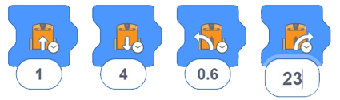
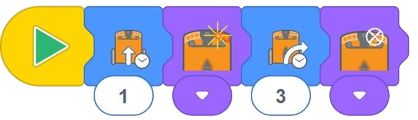

En esta actividad, se les pide a los estudiantes que seleccionen y usen EdBlocks dentro de la aplicación EdBlocks (disponible on-line en la web) para completar la tarea de programar a Edison para que avance una distancia determinada.
Esta actividad presenta el concepto importante de que todo lo que programe para que haga Edison requiere tanto
una acción como una duración.
En EdBlocks, algunos bloques individuales contienen tanto una acción como una duración.
Para muchos de estos bloques, la duración es el tiempo (en segundos) que el usuario puede ingresar.
Estos bloques tienen un pequeño símbolo de reloj y un cuadro de hora de entrada del usuario:

Otros bloques solo contienen una acción. El bloque 'encender el LED derecho' es un ejemplo de un bloque de
solo acción.
La duración de la acción de este bloque está controlada por lo que sucede en el programa después del bloque,
por ejemplo, si otro bloque le dice al programa 'Apagar el LED Derecho':

En esta actividad, para que Edison avance una distancia determinada, los estudiantes deben seleccionar la acción de 'avanzar' con la duración controlada por tiempo, luego experimentar con la cantidad de tiempo que ingresan para que Edison conduzca la distancia correcta.
• Practique cómo descargar un programa con los estudiantes. Recuerde a los estudiantes que escuchen el sonido de éxito antes de desconectar el cable EdComm para asegurarse de que el programa se descargue por completo.
• Hay varios bloques diferentes de 'avance' en EdBlocks. Para esta actividad, asegúrese de que los estudiantes estén seleccionando el icono de conducción controlada por tiempo:
• Recuerde a los estudiantes que pueden cambiar la hora haciendo clic en el número y escribiendo el tiempo deseado, desde 0.01 hasta 320. El tiempo es en segundos.
1. Practica decimales, especialmente las decenas y centenas.
2. Cree problemas verbales de matemáticas basados en esta actividad:
• Si Edison recorre la pista en 2,3 segundos y la pista tiene 23 centímetros de largo, ¿a
qué velocidad se mueve Edison?
Tenga en cuenta: diferentes robots Edison viajarán a velocidades ligeramente diferentes, lo que puede hacer
que los estudiantes obtengan resultados ligeramente diferentes. Las respuestas asumen que la hoja de
actividades está impresa en papel A4.
- Aproximadamente 1 segundo.